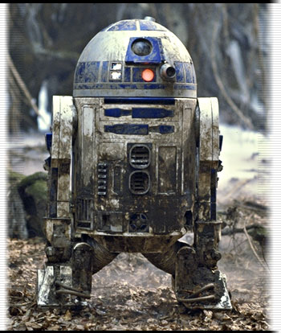

星球大战・R2-D2
R2-D2看起来和普通太空维护用智能机器人（Astromech Droid）一样毫不起眼，但它却蕴涵着同类所不具备的特殊人格：勇敢。一次又一次地，阿图（Artoo）靠着自己的勇气，把R2型智能机器人的性能发挥到令人发指的地步。
和其他未清空记忆体的智能机器人一样，阿图产生了独立人格。虽然它仍然忠心耿耿，但有时会依据自己的判断行事而不是遵循指令。不过，阿图倒也很少因此惹上麻烦。同时，在选择行动方案时，阿图的逻辑判断总是绝对正确。
礼仪社交用智能机器人（Protocol Droid）C-3PO总是觉得这个上蓝漆的小家伙过于自大，但阿图明白，崔庇奥（Threepio）的吵闹是由于担心自己的安危。而事实上，阿图也常常会担心崔庇奥不要因为偶尔心血来潮的蛮干而送掉性命。
阿图最初属于帕蒂莫・阿米黛��皇后（Padme Amidala），后来由莉亚・奥珈娜（Leia Organa）公主继承，最后又辗转来到天行者卢克（Luke Skywalker）身边。自从雅汶战争（Battle of Yavin）前和卢克在塔图茵（Tatooine）相遇以后，阿图就成为了天行者最忠实的伙伴和朋友。
R2-D2：
履带式太空维护用智能机械人（Tracked Astromech Droid）
专家（Expert）4级/斥候（Scout）3级
先攻权加值：+2（敏捷+2）
防护等级：17（等级+4，体形+1，敏捷+2）
速度：8米
体力/生命：18/14
攻击：+7（近战，1d4+2，钳爪）或者+7（近战，1d2+2，电锯）或者+7（近战，2d6，电焊）或者+7（远程）
特殊属性：寻找路径（Trailblazing），信心坚定（Heart）+2，独特智能机器人人格（勇敢；信心检定提高到+2）
豁免：坚韧+5，反射+5，意志+7
体形：小型
原力点：0
黑暗原力点：0
声望：+1
属性：力量14，敏捷14，体质14，智力18，感知12，魅力11
挑战等级：C
随身装备：自发式芯片处理器（Heuristic Processor），高级传感器套件（Improved Sensor Package），机械检测套件（Diagnostics Package），全息放录机（Holorecording Unit），红外传感器（Infrared Vision），工具套件（Tool Mounts）×4，远距离接触套件（Telescopic Appendage），环境适应套件（真空），电磁支脚（Magnetic Feet），内置储存仓（Internal Storage，2公斤），灭火器（Fire Extinguisher）
技能：超空间领航（Astrogate）+18，唬骗+5，使用电脑+13，接触装置+13，知识（太空）+13，聆听+3，驾驶（Pilot）+15，读写基本语，修理（Repair）+16，搜索+13，听说基本语（仅能听懂），听说数码语（Binary），侦察+10
未使用技能点：4
专长：警觉，双巧手，技能专攻（超空间领航），操纵飞船（Starship Operation）（太空战斗机[Startfighter]），擅长武器（激光枪，简单武器）